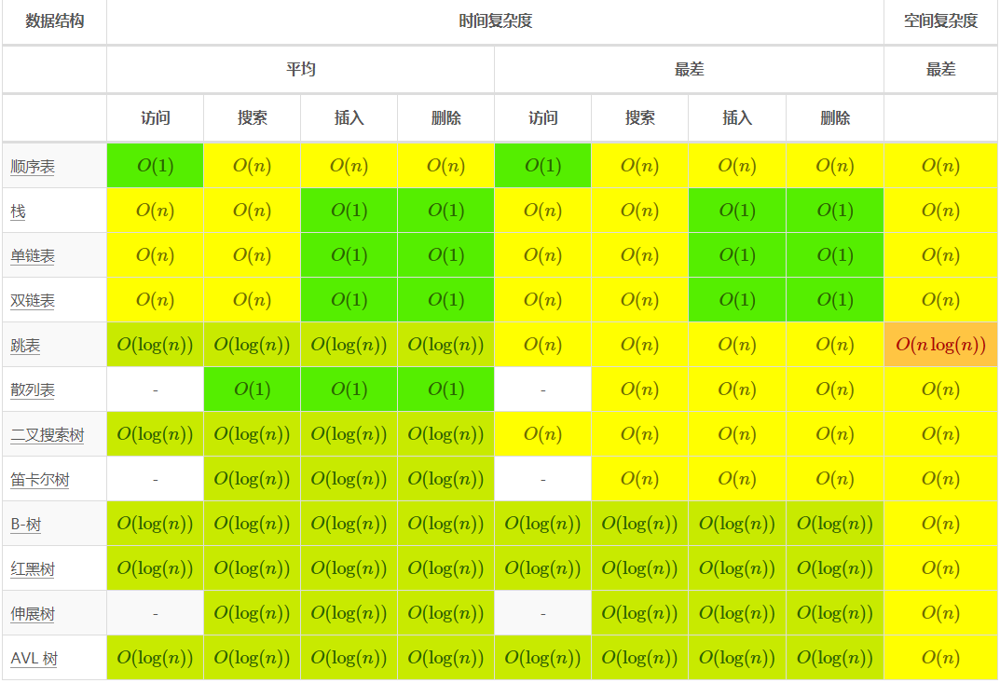
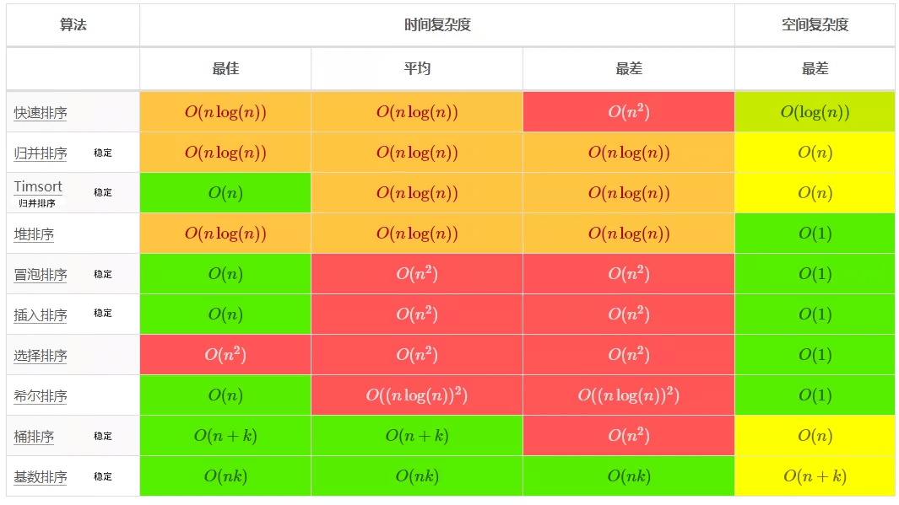
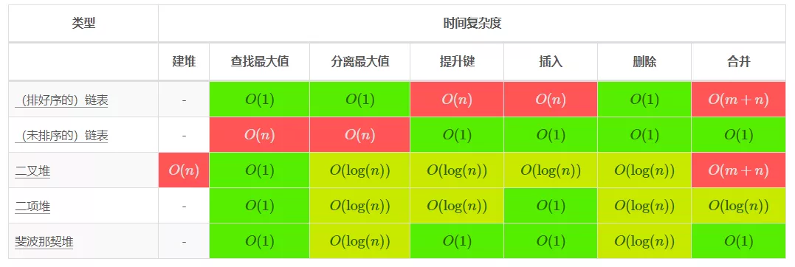
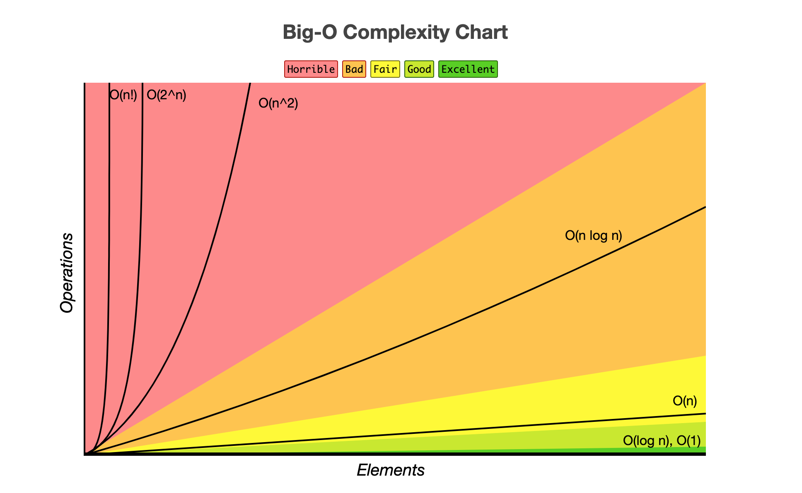

目录
Introduction
1.数据结构和算法
数据结构、数组排序、堆操作
数据结构和算法之美
剑指Offer
2.数据库和缓存
Redis 5设计与源码分析
Redis 深度历险
MySQL 是怎样运行的
DDIA
缓存模式
3.其他
性能之颠
Head First设计模式
趣谈网络协议
Java工程师进阶知识
整洁代码
整洁架构
凤凰架构
BPF之巅
线性代数
微积分重点
傅里叶变换
4.AWS SAA认证
1.AWS知识点
2.AWS认证英语学习
3.AWS的其他服务
4.AWS Github Study Guide
5.TiDB PCTA认证
1.TiDB 基础知识
2.TiDB in Action: 原理和特性
3.TiDB in Action: 部署与管理
4.TiDB in Action: 故障排查
5.TiDB in Action: 最佳实践
Published with GitBook
数据结构、数组排序、堆操作
数据结构、数组排序、堆操作
资料
计算机科学常见算法复杂度
数据结构

数据排序
 （
为什么冒泡排序最优复杂度是O(n)
）
堆操作

大O复杂度

results matching "
"
No results matching "
"